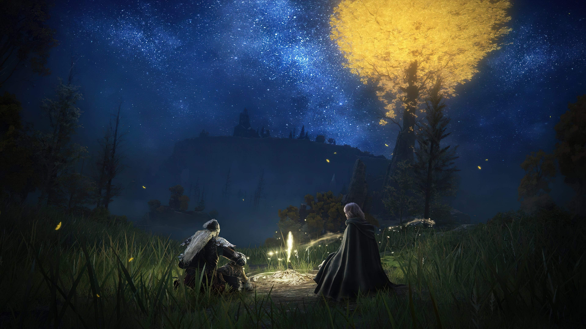

Большинство мобильных игр живёт всего три года
Авторы Bear and Breakfast объявили об отсрочке крупных контентных обновлений
Топ-5 градостроительных симуляторов, которые стоит купить на Keysforgamers
Число игроков в первую Life is Strange превысило 20 миллионов
Число игроков в первую Life is Strange превысило 20 миллионов
Metal: Hellsinger получит апдейт и новые песни 7 декабря
SpongeBob SquarePants: The Cosmic Shake скоро прибудет на iOS и Android
<
>
Здесь могла бы быть ваша реклама!
Гайд: 8 скрытых механик в Elden Ring
Каждое творение FromSoftware наполнено механиками, которые неочевидны для игроков, и Elden Ring не стала исключением из этого правила. Некоторые из таких «секретов» представляют собой просто приятные (или не очень) мелочи вроде недавно обнаруженных разрушаемых стен , а какие-то способны сильно повлиять на геймплей.
Быть может, небольшие игромеханические секреты покажутся не достойной внимания мелочью. И всё же в такой хардкорной игре любая мелочь может спасти жизнь и нервы, так что информация — ваше главное оружие. И мы поможем вооружиться.
Погода влияет на урон от заклинаний
Да, всё верно, прям как в Genshin Impact или Magicka. Во время дождя эффективность огненных спеллов снижается на 10%, а электрических — увеличивается на те же 10%. Разумеется, это не так уж и много, но может сыграть вам на руку в затяжных битвах с боссами.
Электрические атаки отражаются от воды
Эта фича может быть как полезной, так и неприятной — всё зависит от того, кто скастовал заклинание. Абсолютно любая молния, попавшая в воду, наносит бонусный урон, который исходит кругами от точки касания спелла. Круги расходятся всего на пару метров, так что это поможет поразить только несколько близко стоящих друг к другу противников.
Несмотря на то, что круги на воде, которые запустило ваше заклинание, вас поразить не смогут, следите за атаками врагов — как раз-таки они могут вам дополнительно навредить с помощью таких вот дополнительных волн.
Неуязвимость во время седлания маунта
Если про то, что перекаты дают игроку мгновение неуязвимости, знают все, то вот о том, что такие же драгоценные доли секунды даёт призыв лошади, в курсе далеко не каждый игрок. Происходит это в момент, когда ваш персонаж взбирается на скакуна, — во время этой анимации на буквально пару фреймов вы можете избежать смертельный урон. Не стесняйтесь пользоваться этим во время битв с боссами.
Неуязвимость во время седлания маунта
Возможно, вы уже заметили, что какие-то враги выдают «дружественный огонь», а какие-то нет. На самом деле раздаётся friendly fire не случайно, и зависит это от размера противника. По какой-то причине враги, которые ориентировочно выше двух с половиной метров, могут без разбору наносить урон всему окружающему. Даже соразмерным существам. Тролли, гигантские крабы и драконы убивают своих союзников так же просто, как и вас.
Используйте это: можно просто наворачивать круги на лошади, чтобы заагрившиеся на вас противники наносили урон друг другу. Разумеется, они не станут бить друг друга намеренно, но халявный урон — это халявный урон.
Комментарии:

Ссылки:
https://vk.com/
https://web.telegram.org/
VK
Telegram
Контакты:
https://vk.com/id5639
https://e.mail.ru/inbox/?back
При использовании материалов активная ссылка на gamestart.ru обязательна
Сайт использует IP адреса, cookie и данные геолокации Пользователей сайта, условия использования содержатся в Политика конфиденциальности и Пользовательское соглашение Полное или частичное воспроизведение материалов сайта и журнала допускается только с согласия редакции.
Мнение авторов и посетителей сайта может не совпадать с мнением редакции.
Внимание! Большая часть сайта считана на людей старше 18 лет!
Реклама на GameStart https://e.mail.ru/inbox/?back